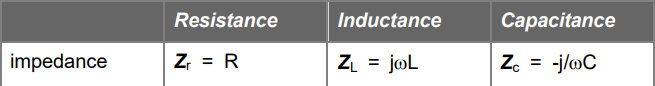

Phasor Analysis#
Author : Emad Etehadi
Sinusoidal steady-state analysis#
Phasor analysis is a technique to find the steady-state response when the system input is a sinusoid. That is, phasor analysis is sinusoidal analysis. Phasor analysis is a powerful technique with which to find the steady-state portion of the complete response. Phasor analysis does not find the transient response. Phasor analysis does not find the complete response.
Phasor currents and Phasor voltages#
Primary circuit:
import schemdraw
import schemdraw.elements as elm
with schemdraw.Drawing() as d:
elm.SourceV().label('$Acos(\omega t + \Theta)$')
elm.Resistor().label("R").right()
elm.Inductor2().label("L", 'bot').down()
elm.Line().left()
<>:4: SyntaxWarning: invalid escape sequence '\o'
<>:4: SyntaxWarning: invalid escape sequence '\o'
C:\Users\Hadi\AppData\Local\Temp\ipykernel_15644\4289861848.py:4: SyntaxWarning: invalid escape sequence '\o'
elm.SourceV().label('$Acos(\omega t + \Theta)$')
Add an imaginary sine source to obtain:
import schemdraw
import schemdraw.elements as elm
with schemdraw.Drawing() as d:
elm.SourceV().label('$jAsin(\omega t + \Theta)$')
elm.SourceV().label('$Acos(\omega t + \Theta)$')
elm.Resistor().label("R").right()
elm.Inductor2().label("L", 'bot').down()
elm.Line()
elm.Line().left()
<>:4: SyntaxWarning: invalid escape sequence '\o'
<>:5: SyntaxWarning: invalid escape sequence '\o'
<>:4: SyntaxWarning: invalid escape sequence '\o'
<>:5: SyntaxWarning: invalid escape sequence '\o'
C:\Users\Hadi\AppData\Local\Temp\ipykernel_15644\64279078.py:4: SyntaxWarning: invalid escape sequence '\o'
elm.SourceV().label('$jAsin(\omega t + \Theta)$')
C:\Users\Hadi\AppData\Local\Temp\ipykernel_15644\64279078.py:5: SyntaxWarning: invalid escape sequence '\o'
elm.SourceV().label('$Acos(\omega t + \Theta)$')
Use Euler’s relation to obtain:
\( A e^{j(\omega t + \Theta_s)} = A e^{j \Theta_s} e^{j \omega t} = A e^{j \omega t} \)
import schemdraw
import schemdraw.elements as elm
with schemdraw.Drawing() as d:
elm.SourceV().label('$A e^{j \omega t}$')
elm.Resistor().label("R").right()
elm.Inductor2().label("L", 'bot').down()
elm.Line().left()
<>:4: SyntaxWarning: invalid escape sequence '\o'
<>:4: SyntaxWarning: invalid escape sequence '\o'
C:\Users\Hadi\AppData\Local\Temp\ipykernel_15644\1601280263.py:4: SyntaxWarning: invalid escape sequence '\o'
elm.SourceV().label('$A e^{j \omega t}$')
KVL in secondary circuit and the differential equation becomes: $\( RI_L e^{j\omega t} + L \frac{d}{dt} \left( I_L e^{j\omega t} \right) = V_s e^{j\omega t} \)\( \)\( RI_L e^{j\omega t} + j\omega L I_L e^{j\omega t} = V_s e^{j\omega t} \)\( \)\( RI_L + j\omega L I_L = V_s \)$ The complex currents and voltages in the equations above are called phasor currents and phasor voltages. Notice that, in the equation above, the inductance appears as a “resistance” of jwL. This quantity is referred to as the inductance’s impedance.
Impedance#
The algebraic relationship between a phasor voltage and a phasor current is a generalization of resistance and is termed an element’s impedance. The unit of impedance is the ohm.

Resistance#
Let’s assume that all the voltages are of the form \(V e^{j\omega t}\) and all the currents are of the form \(I e^{j\omega t}\). Let’s look at the resistance’s element relation, ohm’s law. $\( V e^{j\omega t} = RI e^{j\omega t} \)\( \)\( V = RI \)\( The impedance of the resistance \)Z_r\( is just its resistance. \)\( Z_r = \frac{V}{I} = R \)$
Inductance#
From the inductance’s element relation: $\( V e^{j\omega t} = L \frac{d}{dt} \left(I e^{j\omega t} \right) = j\omega L I e^{j\omega t} \)\( \)\( V = j\omega L I \)\( \)\( Z_L = j\omega L \)$
Capacitance#
From the capacitance’s element relation: $\( I e^{j\omega t} = C \frac{d(V e^{j\omega t})}{dt} = j\omega C V e^{j\omega t} \)\( \)\( I = j\omega C V \)\( \)\( Z_C = \frac{1}{j\omega C} = -\frac{j}{\omega C} \)$
Instructions on how to solve circuits using phasors#
A) adopt cosine reference for generator voltage or current B) replace all impedances with their phasor expression C) write KVL and KCL or use other Network Analysis techniques D) find the phasor expression for the required current or voltage E) calculate phasors F) sketch the phasor diagram G) multiply the phasor with \(e^{j \omega t}\) H) find the real part of the above expression to get the current in the time domain Notice It is customary in Electrical Engineering to use cos(ωt) for our time-domain signal, and we call these phasors ”cosine reference phasors.” If the generator in a circuit is sin(ωt) , we first have to convert the sin function to a cosine. To do that, subtract 90’ from the phase of the sinusoid, because sin(ωt) = cos(ωt−90’)
Example No.1#
We will analyze a circuit driven with a frequency of 1 GHz. The input voltage is represented as:
$\(
v_s(t) = \cos(\omega t)
\)\(
where:
\)\(
R = 1 \, \text{k}\Omega
\)\(
\)\(
C = \frac{1}{2\pi} \times 10^{-12} \, \text{F}
\)$
import schemdraw
import schemdraw.elements as elm
with schemdraw.Drawing() as d:
elm.Ground()
elm.SourceV().label('$cos \omega t$')
elm.Resistor().label("R").right()
elm.Capacitor().label("C", 'bot').down()
elm.Ground()
<>:5: SyntaxWarning: invalid escape sequence '\o'
<>:5: SyntaxWarning: invalid escape sequence '\o'
C:\Users\Hadi\AppData\Local\Temp\ipykernel_15644\1881019955.py:5: SyntaxWarning: invalid escape sequence '\o'
elm.SourceV().label('$cos \omega t$')
a) Identify magnitude, phase, and time-delay of the source voltage b) Calculate magnitude, phase, and time-delay of the voltage across the resistor c) Calculate magnitude, phase, and time-delay of the voltage across the capacitor. d) The simulated voltage magnitude across the resistor is about 0.5V, and the simulated voltage across the capacitor is about 0.85V e) Sketch the phasor diagram of voltages in the circuit Explanation: The magnitude of the voltage source is 1; the phase and time-delays are zero. To find the voltages and currents in the circuit, we will follow the process outlined above. Solving for voltages and currents in the circuit. a) The generator is already given in terms of the cosine function. The phasor of this voltage is Vs=1 b) replace all impedances with their phasor expressions. R is not changed, and the impedance of a capacitor is \(Z_c = \frac{1}{j\omega C\). c) Use Kirchoff’s Voltage law : $\( {V}_s = R \tilde{I} + \frac{\tilde{I}}{j \omega C \)\( d) find the phasor expression for the required current or voltage : \)\( {I} = \frac{\tilde{V}_s}{R + \frac{1}{j\omega C \)\( \)\( {V}_R = R \tilde{I} = R \cdot \frac{\tilde{V}_s}{R + \frac{1}{j\omega C \)\( \)\( {V}_C = Z_C \tilde{I} = \frac{1}{j\omega C} \tilde{I} = \frac{1}{j\omega C \)\( e) calculate the currents and voltages from the above expressions : \)\( {I} = 0.54 e^{j58^\circ} \, \text{mA} \)\( \)\( {V}_R = 0.54 e^{j58^\circ} \, \text{V} \)\( \)\( {V}_C = 0.85 e^{-j32^\circ} \, \text{V} \)\( f) multiply the phasor with \)e^{j\omega t}\( : \)\( 0.54 e^{j58^\circ} e^{j\omega t} = 0.54 e^{j(\omega t + 58^\circ)} \)\( \)\( 0.54 e^{j58^\circ} e^{j\omega t} = 0.54 e^{j(\omega t + 58^\circ)} \)\( \)\( 0.85 e^{-j32^\circ} e^{j\omega t} = 0.85 e^{j(\omega t - 32^\circ)} \)\( g) find the real part of the above expression to get the current in the time domain : \)\( i(t) = \mathcal{R}\{0.54 e^{j(\omega t + 58^\circ)}\} = 0.54 \cos(\omega t + 58^\circ) \, \text{mA} \)\( \)\( v_R(t) = \mathcal{R}\{0.54 e^{j(\omega t + 58^\circ)}\} = 0.54 \cos(\omega t + 58^\circ) \, \text{V} \)\( \)\( v_C(t) = \mathcal{R}\{0.85 e^{j(\omega t - 32^\circ)}\} = 0.85 \cos(\omega t - 32^\circ) \, \text{V} \)$
from PySpice.Spice.Netlist import Circuit
import matplotlib.pyplot as plt
from PySpice.Probe.Plot import plot
from PySpice.Unit import *
circuit = Circuit("RC Circuit")
# Add component to the circuit
circuit.SinusoidalVoltageSource(1, 'a', circuit.gnd, amplitude=10@u_V, frequency=160@u_kHz)
circuit.R(1, 'a', 'b', 1@u_kΩ)
circuit.C(1, 'b', circuit.gnd, 0.147@u_nF)
simulator = circuit.simulator(temperature=25, nominal_temperature=25)
analysis = simulator.transient(step_time=1@u_ns, end_time=50@u_us)
plt.figure(figsize=(12, 6))
plt.title("RC Circuit Response")
plt.xlabel("Time [s]")
plt.ylabel("Voltage [V]")
plot(analysis['a'], label="Input Voltage (V)")
plot(analysis['a'] - analysis['b'], label="Voltage across C")
plt.legend()
plt.grid()
plt.show()
Conclusion#
In this research, we apply our expertise in phasor diagrams to analyze electric circuits.By employing phasor representations, we simplify the complexities associated with alternating current (AC) circuits. These diagrams allow us to visualize and interpret the relationships between voltage and current in different components, such as resistors, inductors, and capacitors. Through the strategic use of vector addition, we can determine the total impedance of the circuit, enabling us to understand how phase angles affect the overall behavior of the circuit under varying frequencies.
Sources#
https://www.rose-hulman.edu/class/ee/HTML/ECE204/PDFs/phasors.pdf https://ximera.osu.edu/electromagnetics/electromagnetics/phasors/digInPhasorsExample